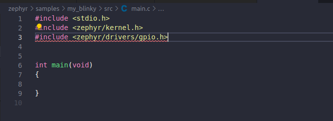

Cấu hình board cho sử dụng GPIO
- Trong phần này chúng ta sẽ tìm hiểu về GPIO cơ bản:
Thiết lập chân input
Thiết lập chân output
Thiết lập chân ngắt
1.Tạo project
Để tạo project nhanh nhất ta copy project blinky trong zephyr/samples/basic đổi tên thành my_blinky.
Xóa thư mục build nếu có. Tạo file app.overlay.
Ở đây chúng ta sẽ sử dụng board stm32f103C8T6 nên trong file CMakeLists.txt ta
thêm vào set (BOARD stm32_min_dev_blue) theo thứ tự dưới đây. Lúc build project ta chỉ cần gõ lệnh west build.
2.Cấu hình GPIO sử dụng app.overlay
Device tree (DTS) được sử dụng để mô tả phần cứng của bo mạch. Ta có thể dùng led pc13 trên board.
Nhưng ở đây ta sẽ cấu hình một led mới.
Ta tạo file app.overlay để cấu hình LED1 và BUTTON theo dưới đây.
/ {
leds {
red_led: led_1 {
gpios = <&gpioa 8 GPIO_ACTIVE_HIGH>;
label = "LD1";
};
};
buttons {
compatible = "gpio-keys";
button0: button_0 {
gpios = <&gpioa 1 (GPIO_PULL_UP | GPIO_ACTIVE_HIGH)>;
label = "User button";
};
};
aliases {
sw0 = &button0;
led1 = &red_led;
};
};
- Ta có:
gpioalà Port8là PinGPIO_ACTIVE_HIGHlà Flag
Ghi chú
GPIO_ACTIVE_HIGH đơn giản chỉ là một cờ để chỉ định rằng chân GPIO được coi là "active" khi ở trạng thái logic cao.
GPIO_ACTIVE_LOW đơn giản chỉ là một cờ để chỉ định rằng chân GPIO được coi là "active" khi ở trạng thái logic thấp.
3.Đặt tên cho các nút GPIO
Vào main.c xóa và chỉ để lại những dòng sau:
thiết lập các #define cho led và button để tiện sử dụng sau này.
//Macro DT_ALIAS dùng để lấy nhãn của button/led
#define LED1_NODE DT_ALIAS(led1)
#define BUTTON0_NODE DT_ALIAS(sw0)
4.Lấy thông tin cấu hình GPIO(số chân GPIO, cấu hình pull-up,pull-down,v.v..)
static const struct gpio_dt_spec led = GPIO_DT_SPEC_GET(LED1_NODE, gpios);
static const struct gpio_dt_spec button = GPIO_DT_SPEC_GET_OR(BUTTON0_NODE, gpios, {0});
5.Cấu hình GPIO(input/output)
int ret1,ret2,ret3;
ret1 = gpio_pin_configure_dt(&led, GPIO_OUTPUT_ACTIVE); // chân output
ret2 = gpio_pin_configure_dt(&button, GPIO_INPUT | GPIO_PULL_UP); // chân input
ret3 = gpio_pin_interrupt_configure_dt(&button,GPIO_INT_EDGE_FALLING); // chân ngắt cạnh xuống
6.Các hàm trong GPIO
Set
gpio_pin_set_dt(&led, 0);// đặt chân ra led ở mức logic 0
Get
gpio_pin_get_dt(&button);// lấy mức logic của nút nhấn
Toggle
gpio_pin_toggle_dt(&led);// thay đổi mức logic của led